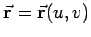
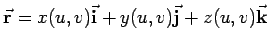
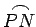
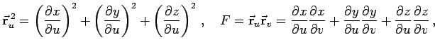
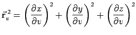
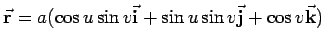

Inhalt Index DeskTop Bronstein

 Geometrie Differentialgeometrie Flächen Linienelement auf einer Fläche
Geometrie Differentialgeometrie Flächen Linienelement auf einer Fläche


Eine Fläche sei in der expliziten Form z=f(x,y) (3.511) oder in der Vektorform  bzw.  (3.512) gegeben. Auf der Fläche seien P(u,v) ein beliebiger Punkt und N(u + du, v + dv) ein in der Nähe von P liegender zweiter Punkt. Die Länge des Bogens  auf der Fläche läßt sich dann angenähert durch das Differential des Bogens oder das Linienelement der Fläche mit der Formel
| E | = |  | |
| G | = |  | (3.523b) |
| Beispiel A | ||
|
Für die Kugel gemäß  (3.515) ergibt sich:
|
| Beispiel B | ||
|
Für eine explizit durch z=f(x,y) (3.510) gegebene Fläche ergibt sich:
|